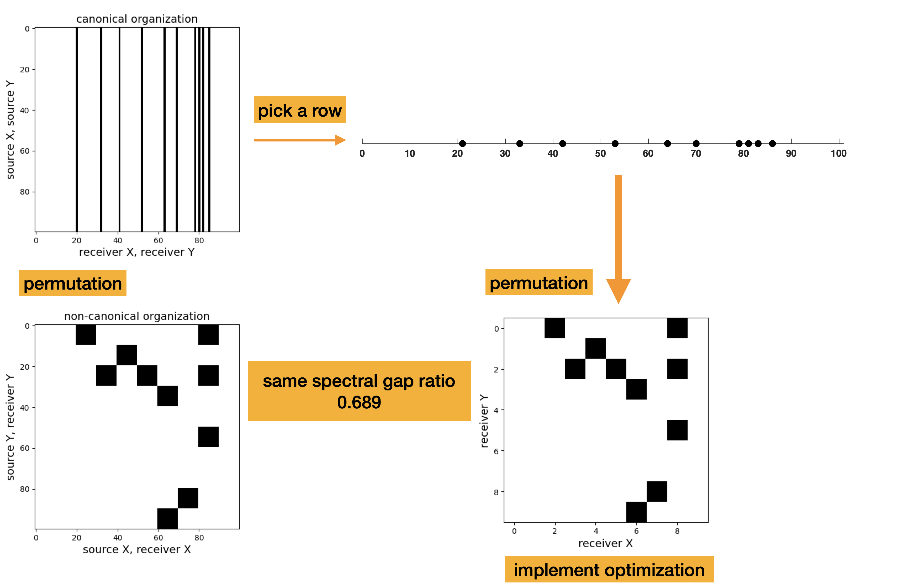

3D seismic survey design by maximizing the spectral gap
Objectives/Scope (100 words)
The huge cost of 3D seismic acquisition calls for methods to reduce the number of receivers in the acquisition by designing optimal receiver sampling masks. Recent studies on 2D seismic show that maximizing the spectral gap of the subsampling mask leads to better wavefield reconstruction results according to expander graph theory. We enrich the current study by proposing a simulation-free method to automatically generate optimal 3D seismic acquisition by maximizing the spectral gap of the subsampling mask via a simulated annealing algorithm. Numerical experiments confirm improvement of the proposed acquisition design method over receiver sampling locations obtained by jittered sampling.
Methods, Procedures, Process (250 words)
The spectral gap ratio is the ratio of the first and second singular values of a binary subsampling mask. It is a cheap-to-compute measure to predict wavefield reconstruction quality from binary sampling masks. Motivated by recent success on 2D seismic survey design methods driven by spectral gap ratio minimization, we consider 3D seismic survey design where receivers are missing and sources are fully sampled. We propose a 3D seismic survey design method via minimizing the spectral gap ratio of 3D source sampling mask.
Because 3D wavefield reconstruction based on low-rank matrix completion relies on the non-canonical Source-X/Receiver-X (columns) Source Y/Receiver Y (rowws) organization of the data into a matrix, we aim to minimize the spectral gap ratio of subsampling mask in that domain. Fortunately, when sources are fully sampled, each subsampled receiver location becomes a fully sampled square in this mask. As a result, the spectral gap ratio in the non-canonical domain is exactly the same as the spectral gap ratio in the common-shot domain (see Figure 1). Therefore, we implement the simulated annealing algorithm to iteratively find receiver subsampling masks that minimize the spectral gap ratio in the common-shot domain. The main computational cost of this algorithm is computing the first two singular values of the source subsampling mask, which is negligible compared to approaches that require wave simulations. The resulting optimal mask with the lowest spectral gap ratio indicates the receiver sampling locations that favor 3D wavefield reconstruction via matrix completion in the non-cononical organization.
Results, Observations, Conclusions (250 words)
To illustrate the efficacy of our method via a numerical experiment on a simulated 3D marine dataset over the compass model. The data volume consists of \(501 \times 100 \times 100 \times 41 \times 41\) entries—i.e., \(n_t \times n_{rx} \times n_{ry} \times n_{sx} \times n_{sy}\) along the time, receiver \(x\), receiver \(y\), source \(x\), and source \(y\) directions. The distance between the adjacent sources and receivers are 150m and 25m, respectively, with a time sampling interval of 0.01s. By removing 90% of receivers using jittered subsampling, we obtain a binary matrix with the spectral gap ratio 0.507 in the non-canonical domain. After applying simulated annealing algorithm, the spectral gap ratio of mask effectively decreases to 0.328. To validate the efficacy of our acquisition design method, we perform data reconstruction on a frequency slice at 16.8Hz via weighted matrix completion for the two subsampled datasets with jittered subsampling mask and the proposed mask, with results shown in Figure 2. The reconstruction signal-to-noise ratio from the observed data at proposed source locations is 12.27 dB, which is about 1.4 dB higher than the reconstruction signal-to-noise ratio 10.88 dB achieved from data oserved at jittered sampled source locations. This confirms that the proposed optimized sources sampling locations result in a superior seismic survey that leads to better wavefield reconstruction performance.
Significance/Novelty (100 words)
This is the first numerical case study that applies spectral gap ratio minimization techniques to seismic acquisition design that favors 3D wavefield reconstruction. Rather than requiring costly wave simulations, the proposed method for optimizing binary masks is computationally inexpensive. Experiments demonstrate that the proposed method generates an improved 3D seismic survey better suitable for 3D wavefield reconstruction.
